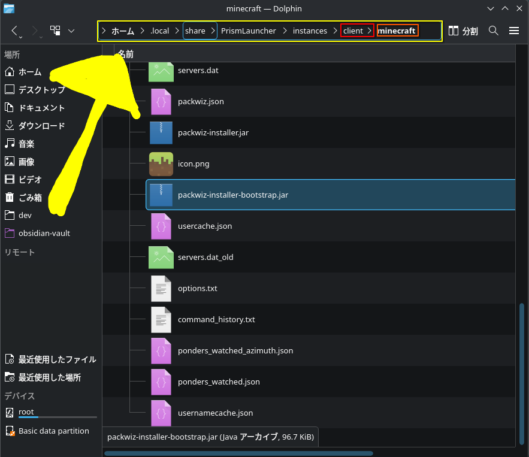
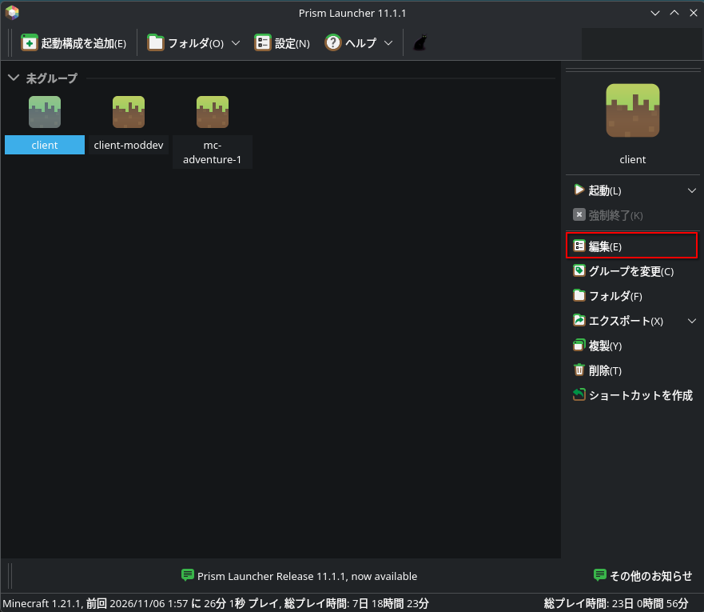
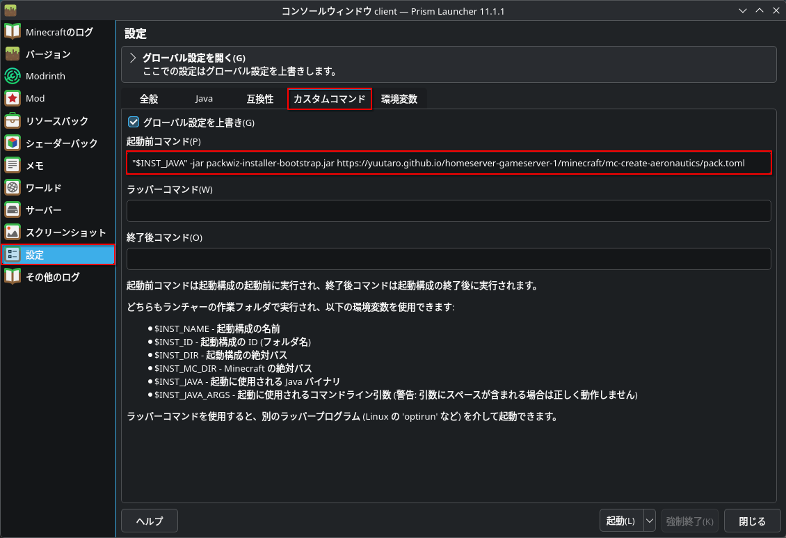

Minecraft / mc-create-aeronautics
Create Aeronautics
クライアント導入・更新
Prism Launcherとpackwizで環境を揃えます。一度設定すれば、ゲームの起動前にMODが自動で更新されます。
Minecraft 1.21.1 · NeoForge 21.1.252 · Java 21
初めて参加する方
設定済みZIPをPrism Launcherに読み込む方法です。JARの配置やコマンド入力は不要です。
- Prism Launcherをインストールし、Minecraftのアカウントを設定します。
- 設定済みPrismインスタンスZIPをダウンロード
- Prism Launcherで「インスタンスを追加 → ZIPからインポート」を開き、ダウンロードしたZIPを選びます。ZIPは展開せず、そのまま指定してください。
- Java 21を選択して起動します。最初にMODのダウンロードが行われるため、少し時間がかかります。
ZIPには起動設定とpackwizの小さなインストーラーを含みます。MOD本体・ワールド・接続先・アカウント情報は含みません。サーバーへの接続先は管理者に確認してください。
既存の環境を移行する方
- 対象の環境がMinecraft 1.21.1 / NeoForge 21.1.252 / Java 21であることを確認します。
- packwiz-installer-bootstrap.jarを公式サイトからダウンロードします。
packwiz-installer.jarではなく、bootstrapを含む名前のJARを使ってください。 -
Prism Launcherで対象インスタンスの「Minecraftフォルダー」を開き、JARを置きます。
modsやoptions.txtと同じ階層です。modsの中や、instance.cfgがある階層ではありません。
JARの配置先。画像はLinuxの例ですが、WindowsでもPrismの「Minecraftフォルダー」から開けます。画像をクリックすると原寸で表示します。 - 古いMODが残らないよう、
modsフォルダをMinecraftフォルダの外へ退避します。必要なMODは起動時に再取得されます。個人用MODは対応状況を確認してから戻してください。 -
対象インスタンスを選択し、右側の「編集」を開きます。

赤枠の「編集」をクリックします。 -
「設定 → カスタムコマンド」を開き、「グローバル設定を上書き」にチェックを入れます。下のコマンドを「起動前コマンド」に貼り付けてください。既にコマンドが設定されている場合は、上書き前に管理者へ相談してください。

入力するのは「起動前コマンド」です。下のテキストからコピーしてください。


"$INST_JAVA" -jar packwiz-installer-bootstrap.jar https://yuutaro.github.io/homeserver-gameserver-1/minecraft/mc-create-aeronautics/pack.toml設定後に起動し、MODの取得が終わるのを待ってください。options.txtや個人用のschematicsはそのまま使用できます。
packwiz管理前の古いMODは、自動では削除されない場合があります。退避せずに移行すると、旧版と新版の重複で起動に失敗することがあります。迷った場合は、新規インスタンスを作る方法が安全です。
設定後の更新について
- Prism Launcherから起動するたびに配布情報を確認し、必要なMODを更新します。起動にはインターネット接続が必要です。
- 更新に失敗した場合は、そのままゲームを起動せず、Prismのログを添えて管理者に確認してください。
- 通常のMOD更新ではZIPを再インポートする必要はありません。Minecraftやローダー自体の変更は、別途案内します。